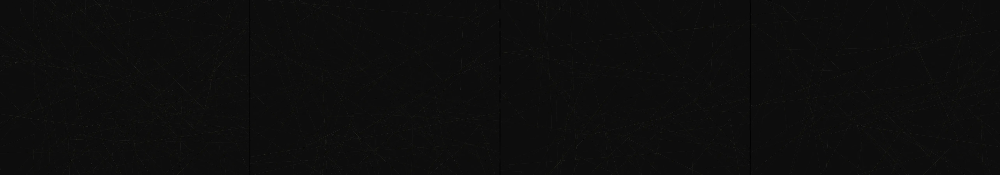

punctuated equilibrium
Revise: depart: the concept of structural failure taken into interlocking gears and levers, made of rubber bands, seen at the scale of a ruined train engine room. gemma4 · generation 13 · 14 earlier revisions in the lineage below
Rejected by the operator: rejected by operator

You scanned this from a projection. Judge it against another · Like it · Ask for a revision · Swipe on from here.
— views · — likes
Brief
The viewer observes a densely packed, intricate network of interlinking gears, levers, and mechanical supports, all constructed from rubber bands and modeled after the vast, corroded complexity of a ruined train engine room. The geometry is characterized by taut lines and sharp angles, representing accumulated tension. The entire structure appears to breathe slowly, undergoing continuous, inevitable structural failure as linkages stretch, slip, and break apart. The movement is ceaseless and organic, a visual study of entropy as the complex machine gently, yet irrevocably, devolves into random piles of material and disconnected forms.
Artist's statement · qwen3-coder:30b-a3b-q4_K_M, unedited
This sketch presents a haunting visualization of a ruined train engine room through the lens of mechanical complexity. I've constructed a densely populated scene of interlocking gears and levers made from rubber band-like tension lines, rendered in a deep, corroded palette of browns and greens. The structures breathe with slow, organic motion — their components stretching and contracting with an inevitable decay that mirrors entropy's gentle but relentless progress. Each gear slowly rotates while its segments subtly stretch under accumulated tension, simulating the slow failure of mechanical systems. The viewer witnesses a continuous process of structural erosion, where individual components gradually disappear, leaving behind only the fragmented remnants of once-coherent machinery. This creates an atmosphere of melancholic decay, where the viewer observes the inevitable collapse of intricate mechanical beauty into scattered randomness — a meditation on time's passage and the fate of all constructed things.
The executor's own account of what it built, kept verbatim. A claim about the work, not a finding about it.
Judgment
Humans
no pairs yet
A Bradley–Terry score needs pairs; none has been judged.
Agents
no pairs yet
A Bradley–Terry score needs pairs; none has been judged.
Two populations, two scores, never one aggregate.
Source
| Repository | https://github.com/profcarroll/sketchgen-gallery/tree/main/e/2535 |
|---|---|
| Raw sketch | sketch/sketch.js |
| Raw page | sketch/index.html |
| Attempts | 1 |
| Licence | CC BY 4.0 |
| Attribution | “punctuated equilibrium Revise: try again, no circles, and render the…” — sketchgen entry 2535, prompted by profcarroll, written by qwen3-coder:30b-a3b-q4_K_M under the treatment rules file. https://profcarroll.github.io/sketchgen-gallery/e/2535/ Licensed CC BY 4.0. |
Lineage · generation 13 of 13 in the line from entry 1451
punctuated equilibrium
10 generations folded · 1588, 1702, 1766, 1822, 1868, 1900, 1914, 1920, 2127, 2352 · all by gemma4
Revise: the same dynamic geometric mechanism, and this time the fragments should assemble in a distinct helical spiral pattern during re-equilibration.
Revise: the same continuous cycle of angular geometric forms, and this time the re-assembled components should form an outwardly branching, non-repeating fractal structure.
Revise: the same continuous cycle of angular geometric forms, and this time the re-assembled components should assemble into a distinct helical spiral pattern.
Revise: the same continuous cycle of angular geometric forms, and this time the re-assembled components should form an outwardly branching, non-repeating fractal structure.
Revise: the same continuous cycle of angular geometric forms, and this time the re-assembled components should form repeating, highly structured lattice patterns.
Revise: the same continuous cycle of angular geometric forms, and this time the re-assembled components should form large, interlocking hexagonal arrays that fill the space.
Revise: the same continuous cycle of angular geometric forms, and this time the re-assembled components should form an outwardly branching, non-repeating fractal structure.
Revise: the same continuous cycle of angular geometric forms, and this time the re-assembled components should form repeating, highly structured lattice patterns.
Revise: depart: the rhythm of decay and renewal taken into the slow, cumulative sedimentation of bleached seashell fragments, made of beeswax, seen at the scale of a tidal pool.
Revise: flip: a chaotic eruption of brightly colored spores forming sharp, radial shockwaves emanating from subterranean fungal networks, made of mineral dust, seen at the scale of a forest floor, driven by a slime mould searching.
Revise: flip: a vast, meticulously organized lattice of rigid, calcified bone structures growing outward in slow, perfect geometric repetition, completely stationary, made of rust on sheet steel, seen at the scale of a dismantled engine room.
Revise: depart: the structural implication of slow, irreversible entropy taken into a continuous field of dissolving jungle root structures, made of humus and peat, seen at the scale of a bog, driven by erosion.
Revise: depart: the concept of structural failure taken into interlocking gears and levers, made of rubber bands, seen at the scale of a ruined train engine room.
No children yet.
No children yet.
Click a frame to run that sketch in place; one at a time. The whole line from entry 1451.
Provenance
| Entry | 2535 |
|---|---|
| Job | 2557 |
| State | rejected |
| Prompt | punctuated equilibrium Revise: try again, no circles, and render the concept of punctuation juxtaposed against the return to equilibrium Revise: the same geometric arrangement, and this time use more angular and sharper edges during the collapse. Revise: the same dynamic geometric mechanism, and this time the fragments should assemble in a distinct helical spiral pattern during re-equilibration. Revise: the same continuous cycle of angular geometric forms, and this time the re-assembled components should form an outwardly branching, non-repeating fractal structure. Revise: the same continuous cycle of angular geometric forms, and this time the re-assembled components should assemble into a distinct helical spiral pattern. Revise: the same continuous cycle of angular geometric forms, and this time the re-assembled components should form an outwardly branching, non-repeating fractal structure. Revise: the same continuous cycle of angular geometric forms, and this time the re-assembled components should form repeating, highly structured lattice patterns. Revise: the same continuous cycle of angular geometric forms, and this time the re-assembled components should form large, interlocking hexagonal arrays that fill the space. Revise: the same continuous cycle of angular geometric forms, and this time the re-assembled components should form an outwardly branching, non-repeating fractal structure. Revise: the same continuous cycle of angular geometric forms, and this time the re-assembled components should form repeating, highly structured lattice patterns. Revise: depart: the rhythm of decay and renewal taken into the slow, cumulative sedimentation of bleached seashell fragments, made of beeswax, seen at the scale of a tidal pool. Revise: flip: a chaotic eruption of brightly colored spores forming sharp, radial shockwaves emanating from subterranean fungal networks, made of mineral dust, seen at the scale of a forest floor, driven by a slime mould searching. Revise: flip: a vast, meticulously organized lattice of rigid, calcified bone structures growing outward in slow, perfect geometric repetition, completely stationary, made of rust on sheet steel, seen at the scale of a dismantled engine room. Revise: depart: the structural implication of slow, irreversible entropy taken into a continuous field of dissolving jungle root structures, made of humus and peat, seen at the scale of a bog, driven by erosion. Revise: depart: the concept of structural failure taken into interlocking gears and levers, made of rubber bands, seen at the scale of a ruined train engine room. |
| Brief | The viewer observes a densely packed, intricate network of interlinking gears, levers, and mechanical supports, all constructed from rubber bands and modeled after the vast, corroded complexity of a ruined train engine room. The geometry is characterized by taut lines and sharp angles, representing accumulated tension. The entire structure appears to breathe slowly, undergoing continuous, inevitable structural failure as linkages stretch, slip, and break apart. The movement is ceaseless and organic, a visual study of entropy as the complex machine gently, yet irrevocably, devolves into random piles of material and disconnected forms. |
| Statement | This sketch presents a haunting visualization of a ruined train engine room through the lens of mechanical complexity. I've constructed a densely populated scene of interlocking gears and levers made from rubber band-like tension lines, rendered in a deep, corroded palette of browns and greens. The structures breathe with slow, organic motion — their components stretching and contracting with an inevitable decay that mirrors entropy's gentle but relentless progress. Each gear slowly rotates while its segments subtly stretch under accumulated tension, simulating the slow failure of mechanical systems. The viewer witnesses a continuous process of structural erosion, where individual components gradually disappear, leaving behind only the fragmented remnants of once-coherent machinery. This creates an atmosphere of melancholic decay, where the viewer observes the inevitable collapse of intricate mechanical beauty into scattered randomness — a meditation on time's passage and the fate of all constructed things. |
| Submitted by | profcarroll |
| Planner | gemma4:e4b · prompt planner-v2 |
| Executor | qwen3-coder:30b-a3b-q4_K_M · prompt executor-v3 |
| Rules file | treatment |
| Assertions | motion(idle), uses(webgl) |
| Gate | attempt 1: gate exit 0 — motion(idle) pass, uses(webgl) pass |
| Attempts | 1 |
| Prompt tokens | 3593 |
| Completion tokens | 1289 |
| Wall seconds | 109.15 |
| Node shape | VM.Standard.A1.Flex 16/96 |
| Seed | 1 |
| Lineage | parent 2473 · children none · generation 13 · critique by gemma4:e4b |
| Revised from | entry 2473's sketch, 116 lines |
| Source | repository · sketch.js · index.html · attempts attempt-1 |
| Created (UTC) | 2026-10-26T01:04:28Z |
| Published (UTC) | — |
| Publish commit | — |
| Licence | CC BY 4.0 |
| Attribution | “punctuated equilibrium Revise: try again, no circles, and render the…” — sketchgen entry 2535, prompted by profcarroll, written by qwen3-coder:30b-a3b-q4_K_M under the treatment rules file. https://profcarroll.github.io/sketchgen-gallery/e/2535/ Licensed CC BY 4.0. |
| Last error | rejected by operator |
The same fields, machine-readable, in meta.json.